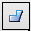
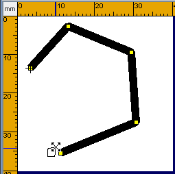
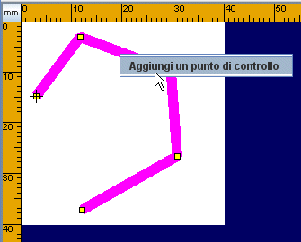
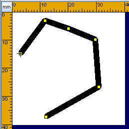
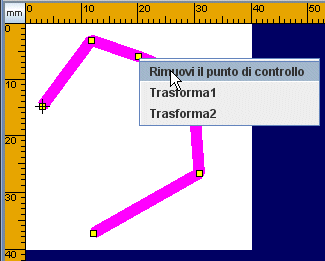
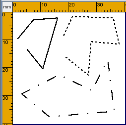
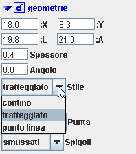
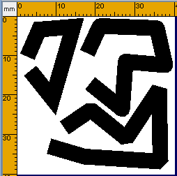

Premere sul tasto

Linee spezzate e poligoni irregolari e poi posizionare il mouse sull'area di lavoro. Serviranno piu' clic uno per il punto iniziale e uno per ogni punto della linea spezzata (tasto destro del mouse). Per aggiungere il punto finale, il clic va fatto col tasto sinistro del mouse. Non e' necessario tenere premuto il mouse fra i clic. Anche se si tiene premuto il mouse la linea spezzata viene disegnata, ma e' piu' semplice disegnarla spostando il mouse e non trascinandolo
.Dopo aver disegnato la linea spezzata e' possibile modificarla posizionandosi con il mouse su uno dei marker premendo e trascinando
Aggiungere un punto di controlloCliccare con il tasto destro del mouse sul bordo della linea spezzata, nel punto in cui si vuole aggiungere il punto di controllo
  |
Rimuovere un punto di controlloCliccare con il tasto destro del mouse sul punto di controllo che si intende eliminare
 |
Linee Spezzate Tratteggiati o PuntoLineaDopo aver disegnato la linea spezzata e' possibile renderla tratteggiata cambiando lo stile.
  |
E' inoltre possibile modificare la scala del tratteggio per ottenere l'effetto desiderato
Linee Spezzate con spigoli Arrotondati, Smussati, Squadrati |